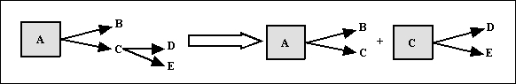

Resum
1FN
Es descompon la taula en dos
1a.- Projecció de la clau junt amb els atributs que tenen valors atòmics.
2a.- Nova clau amb els atributs que tenen valors múltiples (cal idear una nova clau).
2FN
- Es troba en 1FN.
- Tot atribut secundari (aquells que no pertanyen a la clau principal, els que es troben fora de la caixa) depèn totalment (té una dependència funcional total) de la clau completa i, per tant, no d'una part d'ella.
Es descompon la taula en dos
1a.- Una taula amb la clau i totes les seues dependències totals.
2a.- Una altra taula amb la part de la clau que té dependències, i els atributs secundaris implicats.

3FN
- Es troba en 2FN.
- No existeixen atributs no primaris (atributs que no formen part de la clau principal) que són transitivament dependents de cada clau candidata de la taula.
Es descompon la taula en dos
1a.- Una taula amb la clau i tots els atributs no primaris que no són transitius.
2a.- Una altra taula amb els atributs transitius i l'atribut no primari (que serà la clau de la nova taula).

FNBC
Es descompon la taula en dos
1a.- Una taula amb tots els atributs menys la part de la clau dependent de l'atribut secundari. La clau està formada per la resta de la clau i l'atribut secundari del que depenia part de la clau.
2a.- Una altra taula en què l'atribut de què depèn part de la clau serà la nova clau i aquesta part de la clau com a atribut secundari.

Llicenciat sota la Llicència Creative Commons Reconeixement NoComercial SenseObraDerivada 3.0